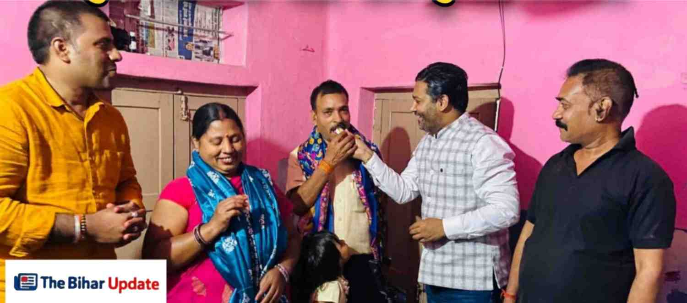

UPSC में 20वीं रैंक लाकर इतिहास रचने वाले दृष्टिबाधित रविराज के घर पहुंचे भाजपा नेता रवि गुप्ता

नवादा जिले के लिए गर्व का क्षण उस समय बना जब जिले के दृष्टिबाधित प्रतिभाशाली युवक रविराज ने संघ लोक सेवा आयोग (UPSC) की प्रतिष्ठित परीक्षा में शानदार सफलता हासिल करते हुए अखिल भारतीय स्तर पर 20वीं रैंक प्राप्त की।
उनकी इस सफलता से न केवल नवादा बल्कि पूरे बिहार में खुशी की लहर दौड़ गई है। रविराज की इस उपलब्धि को पूरे जिले के लिए ऐतिहासिक बताया जा रहा है।
रविराज बचपन से ही दृष्टिबाधित हैं, लेकिन उन्होंने कभी भी अपनी कमजोरी को अपनी मंजिल के रास्ते में बाधा नहीं बनने दिया। सीमित संसाधनों और कठिन परिस्थितियों के बावजूद उन्होंने लगातार मेहनत और लगन से पढ़ाई जारी रखी।
इससे पहले भी रविराज UPSC की परीक्षा में शानदार प्रदर्शन कर चुके हैं। उन्होंने पिछली बार इस परीक्षा में 182वीं रैंक हासिल की थी। इस बार उन्होंने अपनी पिछली उपलब्धि को और बेहतर करते हुए 20वीं रैंक हासिल कर इतिहास रच दिया।

रविराज की इस बड़ी सफलता की खबर मिलते ही उन्हें बधाई देने वालों का तांता लग गया। नवादा के प्रसिद्ध व्यवसायी और भाजपा नेता रवि गुप्ता भी उन्हें बधाई देने के लिए उनके घर पहुंचे।
उन्होंने रविराज और उनके परिवार से मुलाकात कर मिठाई खिलाई और इस उपलब्धि पर शुभकामनाएं दीं।
इस दौरान रवि गुप्ता ने कहा कि दृष्टिबाधा जैसी कठिन परिस्थिति के बावजूद रविराज ने जो सफलता हासिल की है, वह पूरे समाज के लिए प्रेरणा का स्रोत है।
इस मौके पर भाजपा युवा मोर्चा अध्यक्ष अजीत शंकर और समाजसेवी गोरे लाल भी मौजूद रहे। सभी ने रविराज की इस उपलब्धि पर उन्हें बधाई दी और उनके उज्ज्वल भविष्य की कामना की।
रविराज की कहानी यह साबित करती है कि यदि किसी व्यक्ति में मजबूत इच्छाशक्ति और कड़ी मेहनत करने का जज्बा हो, तो कोई भी बाधा उसे सफलता प्राप्त करने से नहीं रोक सकती।